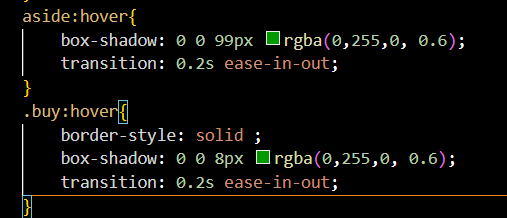
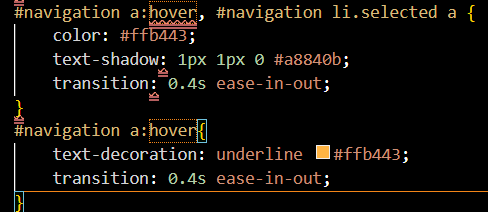
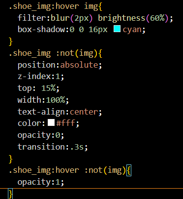
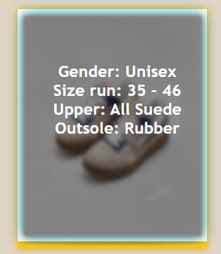
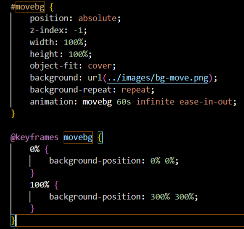

To start, we make a tiny shadow just below our algorithm by using the box-shadow command. The transition algorithm is then used to create a transition effect. With the box-shadow command, we set the correct size before choosing the final color as ''rgba (0, 255, 0, 0.6)". The "Transition: 0.2s ease-in-out" created portion can be zoomed in every 0.2 seconds. When you move the cursor pointer over the chosen element, these commands will all be executed at the same time.
The algorithm we apply to transition between webpages is shown in the picture below. As you can see, we highlighted the text at the top of each page using text-shadow. Then text-decoration is used to decorate. To make both of these algorithms more attractive, we added the matching color.
Following the algorithm's application, we receive the output presented below:
In the first paragraph command, we use the filter statement (which is the light filter command) to help blur the product image. We use opacity to determine the size and brightness to determine the opacity of the image. We do this so that we can then add product information right into the photo frame to make it easier for customers to access the product. We also use box-shadow for decoration, as mentioned above. In the next two commands, the basic commands learned in class such as position, top, width, etc are still useful. We've added two new commands to highlight product information. First, the "z-index" command determines the position of the layers (above or below previous layers). The other command is "opacity" which determines the transparency of a certain image or background color.
This is the result when we add the above statements:
This is the part we consider the most progressive. We changed our background to animation and added an effect that moves it around your screen. To begin, we use "z-index" to make our background appear behind. Then we do some basic editing before using a new command: "object-fit: cover." Object-fit is an algorithm that helps to resize the image; the cover keeps the ratio and fills the provided frame. Finally, we complete the first code with the animation statement: movebg 60s infinite ease-in-out. Animation is the motion effect, movebg is the ID we assign to the image, 60s is the time function, infinite is the infinite repeat, and ease-in-out is slow-fast-slow motion. the last code in the image is to determine where the background should move. The background will move from position 0% to 100%, from position 0% 0% to position 300% 300%.
Here is our new background. Since it's an image, you won't be able to see it moving, but in fact, our background will always move every time you visit the website.